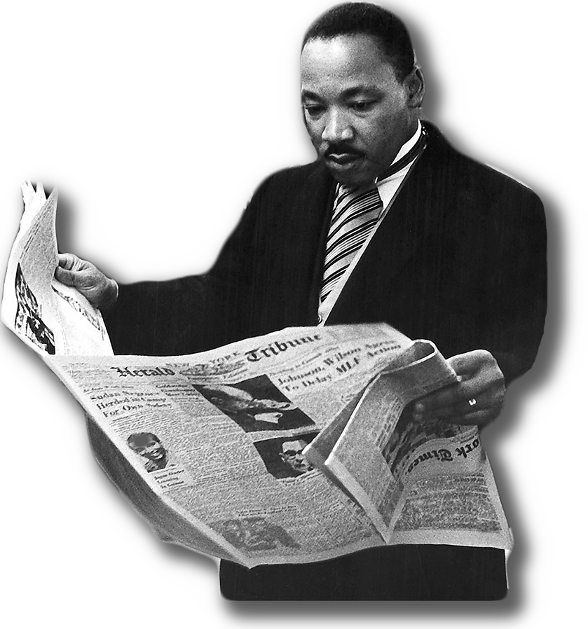
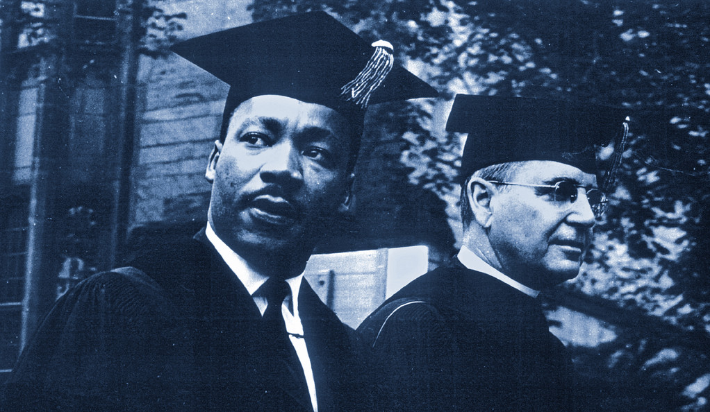
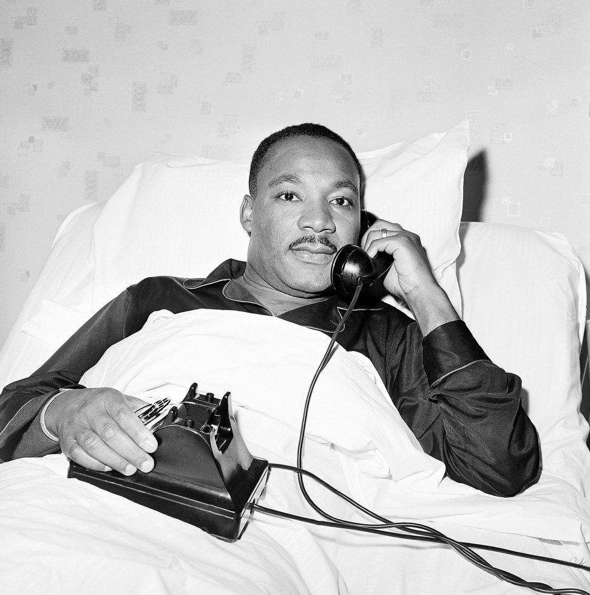
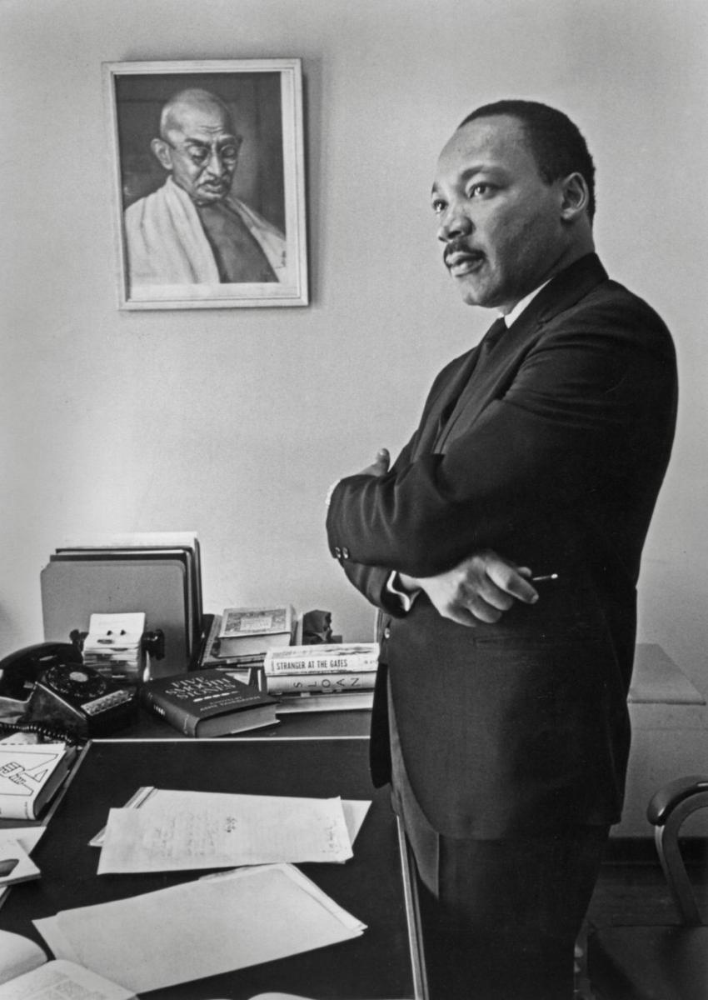
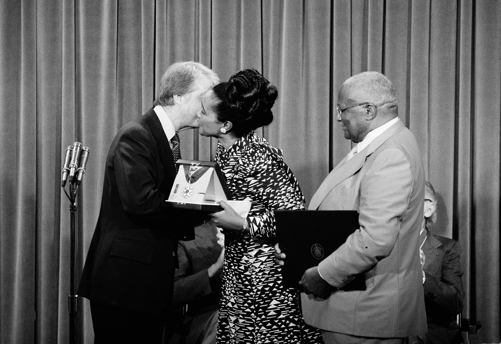

„Ak sa svet pozrie do minulého storočia
bude plakať.
Nie preto, že tam bolo veľa utrpenia
ale preto, že dobrí ľudia mlčali.“
Pôvodne sa volal Michael King Jr. po svojom otcovi Michaelovi Kingovi. Po výlete do Nemecka sa jeho otec, pastor, nadchol pre Martina Luthera a zmenil sebe aj synovi meno.
Bol výborným študentom. Na strednej škole preskočil až dva ročníky. Keď študoval na vysokej škole, ešte nemal oficiálne ukončenú tú strednú.
Titul bakalár získal už vo veku 19 rokov.
Svoju svadobnú cestu strávil v truhlici na pochovávanie. Myslel si, že z dôvodu farby ich pleti sa nedostanú na adekvátnu dovolenku a jeho priateľ mu ponúkol ubytovanie v rakve.
V roku 1958 ho napadla nožom žena. Čepeľ sa zarezala tak blízko aorty, že podľa doktorov stačil aj slabší pohyb, aby sa úplne roztrhla.
Bol veľkým fanúšikom Star Treku.
King bol fascinovaný dielom a odkazom Ghándího. nakoniec sa rozhodol Indiu aj navštíviť a po jeho návrate domov bol už definitívne presvedčený, že jedinou správnou cestou pre ľudstvo je mier a nenásilie.
Vystupoval proti vojne vo Vietname.
V roku 1977 mu prezident Jimmy Carter udelil najvyššiu poctu, akú môže človek v USA získať – Prezidentskú medailu slobody. V roku 2004 dostal aj zlatú medailu Kongresu. Obe ceny boli udelené samozrejme už in memoriam.
V auguste 1965 Kongres prijal zákon o hlasovacích právach, ktorý zaručoval volebné právo – prvýkrát udelené 15. dodatkom – všetkým Afroameričanom.
4. apríla 1968
bol zastrelený v meste
Memphis v
Tennessee v USA.